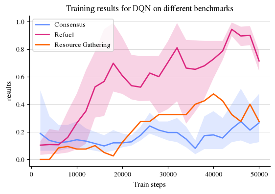
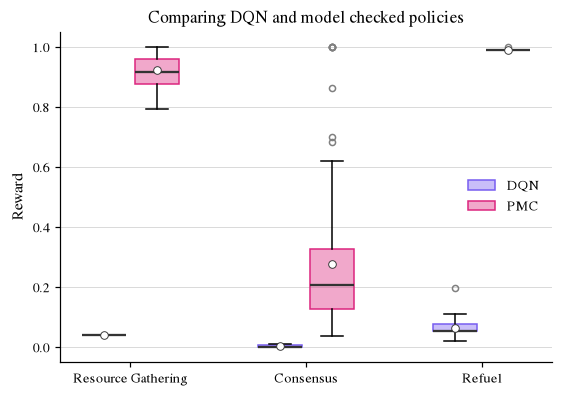

Workflow: Benchmark your Reinforcement Learning policy against a model checked optimal policy¶
What is the motivation?
Say you want to evaluate how a Reinforcement Learning (RL) algorithm performs compared to the actual optimal policy from model checking.
Plus, you have an interesting model given as a prism file, or an MDP built in stormpy.
With VeriGym, you can easily load the MDP into an ExplicitEnv, and train a policy on it with your custom RL algorithm.
Additionally, you can use our stormpy interfacing to easily model check and generate an optimal solution and associated policy given the fully specified model.
Then, you can observe how close your algorithm gets to the theoretically optimal value, and how your algorithm’s learned policy behaves to an optimal policy from stormpy.
What do we show here? In this workflow, we benchmark a standard RL algorithm against model checked ground-truth results with the following steps:
We load a
PRISMprogram describing an MDP intoVeriGymusingstormpy.We train a policy on the resulting
FrameworkExplicitEnvusingstable_baselines3implementation ofDQN.We model check the MDP in
stormpy.We compare the reward obtained by the learned policy in simulation with the reward of the optimal policy in simulation using the
PolicyClassmodule.We check the value of the learned policy by building and checking a Discrete-Time Markov Chain (DTMC) using
stormpy.
Imports and helpers¶
# Imports
import os
import stable_baselines3 as sb3
from gymnasium.wrappers import TimeLimit
# VeriGym
from verigym.environments.frameworkexplicitenv import FrameworkExplicitEnv
from verigym.frameworks.stormpy.stormpy_utils import load_stormpy_model
from verigym.supplements.modelchecking import get_policy_from_stormpy, check_policy_value_in_stormpy
from verigym.frameworks.stable_baselines3.policy import SB3Policy
from workflow_utils import OUTPATH, train_with_sb3_dqn, plot_logged_data, run_eval_episodes, plot_compare_policy_eval
import plot_style
# Paths, global variables, etc.
GAMMA = 0.95
SUBPATH = "rl_mc_files"
RL_OUTPATH = f"{OUTPATH}/{SUBPATH}/dqn"
PLOT_PATH = f"{OUTPATH}/figures/{SUBPATH}"
os.makedirs(PLOT_PATH, exist_ok=True)
prism_path = "../examples/prism_files/"
benchmarks = {
"Resource Gathering": {
"file": prism_path + "resource-gathering.v2.pm",
"constants": "B=200,GOLD_TO_COLLECT=15,GEM_TO_COLLECT=15",
"property": 'Rmax=?' + f" [Cdiscount={GAMMA}]",
"maxsteps": 200
},
"Consensus":
{
"file": prism_path + "consensus.4.v1.prism",
"constants": "K=2",
"property": 'Rmax=?' + f" [Cdiscount={GAMMA}]",
"maxsteps": 1100
},
"Refuel": {
"file": prism_path + "refuel-mdp.prism",
"constants": "N=25,ENERGY=12",
"property": 'Rmax=?' + f" [Cdiscount={GAMMA}]",
"maxsteps": 100
}
}
Actual workflow¶
We are using three benchmarks from qcomp and the Revised Practitioners Guide here. For all tasks, we are interested in maximizing the reward before terminating.
Resource Gathering is a grid-world game, in which the goal is to collect as much gold and as many gems as possible. For our experiments here, we focus on collecting gold.
Consensus Is an internet protocol. We focus on running for a maximal number of steps.
Refuel Is a grid-world task where an autonomous vehicle must reach a goal without running out of fuel. We focus on maximizing the time before running out of fuel.
We start our worklow by loading each MDP into stormpy, and creating a FrameworkExplicitEnv from it.
(The eval_env is identical and used for the DRL training evaluation.)
For the model checking part, we write the reward-maximizing objective by querying the maximal reward (Rmax=?), cumulative (C), with discount factor \(\gamma=0.95\) (discount=0.95), using the same factor as for DQN training.
We then train our DRL model using the stable_baselines3 implementation of DQN.
print("Loading Resource Gathering")
mdp_rg = load_stormpy_model(benchmarks["Resource Gathering"]["file"],
constants=benchmarks["Resource Gathering"]["constants"],
property_strs=benchmarks["Resource Gathering"]["property"])
print(mdp_rg)
env_rg = FrameworkExplicitEnv.from_stormpy(mdp_rg)
env_rg = TimeLimit(env_rg, max_episode_steps=benchmarks["Resource Gathering"]["maxsteps"])
eval_env_rg = FrameworkExplicitEnv.from_stormpy(mdp_rg)
eval_env_rg = TimeLimit(eval_env_rg, max_episode_steps=benchmarks["Resource Gathering"]["maxsteps"])
print()
Loading Resource Gathering
--------------------------------------------------------------
Model type: MDP (sparse)
States: 24064
Transitions: 83456
Choices: 77312
Reward Models: rew_gold
State Labels: 3 labels
* deadlock -> 0 item(s)
* init -> 1 item(s)
* success -> 94 item(s)
Choice Labels: 4 labels
* right -> 19456 item(s)
* left -> 18944 item(s)
* top -> 19456 item(s)
* down -> 19456 item(s)
--------------------------------------------------------------
print("Loading Consensus")
mdp_c = load_stormpy_model(benchmarks["Consensus"]["file"],
constants=benchmarks["Consensus"]["constants"],
property_strs=benchmarks["Consensus"]["property"])
print(mdp_c)
env_c = FrameworkExplicitEnv.from_stormpy(mdp_c)
env_c = TimeLimit(env_c, max_episode_steps=benchmarks["Consensus"]["maxsteps"])
eval_env_c = FrameworkExplicitEnv.from_stormpy(mdp_c)
eval_env_c = TimeLimit(eval_env_c, max_episode_steps=benchmarks["Consensus"]["maxsteps"])
print()
Loading Consensus
--------------------------------------------------------------
Model type: MDP (sparse)
States: 22656
Transitions: 75232
Choices: 60544
Reward Models: steps
State Labels: 6 labels
* deadlock -> 0 item(s)
* init -> 1 item(s)
* finished -> 64 item(s)
* all_coins_equal_1 -> 257 item(s)
* all_coins_equal_0 -> 4593 item(s)
* agree -> 4850 item(s)
Choice Labels: 25 labels
* process4_cmd_23 -> 3672 item(s)
* process2_cmd_8 -> 3672 item(s)
* process3_cmd_19 -> 3240 item(s)
* process1_cmd_3 -> 432 item(s)
* process4_cmd_22 -> 3672 item(s)
* process1_cmd_5 -> 3240 item(s)
* process3_cmd_15 -> 3672 item(s)
* process1_cmd_1 -> 3672 item(s)
* process2_cmd_9 -> 3672 item(s)
* process3_cmd_16 -> 3672 item(s)
* process2_cmd_11 -> 432 item(s)
* process3_cmd_18 -> 432 item(s)
* process1_cmd_4 -> 432 item(s)
* process2_cmd_12 -> 3240 item(s)
* process2_cmd_7 -> 3672 item(s)
* process4_cmd_24 -> 432 item(s)
* process3_cmd_17 -> 432 item(s)
* process1_cmd_0 -> 3672 item(s)
* process2_cmd_10 -> 432 item(s)
* process4_cmd_21 -> 3672 item(s)
* process3_cmd_14 -> 3672 item(s)
* process4_cmd_25 -> 432 item(s)
* process1_cmd_2 -> 3672 item(s)
* done -> 64 item(s)
* process4_cmd_26 -> 3240 item(s)
--------------------------------------------------------------
print("Loading Refuel")
mdp_rf = load_stormpy_model(benchmarks["Refuel"]["file"],
constants=benchmarks["Refuel"]["constants"],
property_strs=benchmarks["Refuel"]["property"])
print(mdp_rf)
env_rf = FrameworkExplicitEnv.from_stormpy(mdp_rf)
env_rf = TimeLimit(env_rf, max_episode_steps=benchmarks["Refuel"]["maxsteps"])
eval_env_rf = FrameworkExplicitEnv.from_stormpy(mdp_rf)
eval_env_rf = TimeLimit(eval_env_rf, max_episode_steps=benchmarks["Refuel"]["maxsteps"])
print()
Loading Refuel
--------------------------------------------------------------
Model type: MDP (sparse)
States: 4835
Transitions: 32664
Choices: 16912
Reward Models: steps
State Labels: 6 labels
* deadlock -> 0 item(s)
* traps -> 5 item(s)
* stationvisit -> 37 item(s)
* init -> 1 item(s)
* notbad -> 4209 item(s)
* goal -> 3 item(s)
Choice Labels: 8 labels
* placement -> 1 item(s)
* south -> 4084 item(s)
* refuel -> 33 item(s)
* east -> 4084 item(s)
* north -> 4040 item(s)
* empty -> 622 item(s)
* west -> 4040 item(s)
* done -> 8 item(s)
--------------------------------------------------------------
Toggle here to view or hide the training output…¶
STEPS = 50000
for env_str, env, eval_env in zip(["resource", "consensus", "refuel"], [env_rg, env_c, env_rf], [eval_env_rg, eval_env_c, eval_env_rf]):
if not os.path.exists(f"{RL_OUTPATH}/{env_str}/dqn_model.zip"):
print(f"Training on {env_str}")
os.makedirs(f"{RL_OUTPATH}/{env_str}/", exist_ok=True)
train_with_sb3_dqn(env, eval_env, f"{RL_OUTPATH}/{env_str}/", n_steps=STEPS)
else:
print("Proceeding with pre-trained model.")
Proceeding with pre-trained model.
Proceeding with pre-trained model.
Proceeding with pre-trained model.
Comparing the policies¶
We now load our trained DQN policy and look at the reward development during training. We train for 50000 steps.
model_rg = sb3.DQN.load(f"{RL_OUTPATH}/resource/dqn_model")
model_c = sb3.DQN.load(f"{RL_OUTPATH}/consensus/dqn_model")
model_rf = sb3.DQN.load(f"{RL_OUTPATH}/refuel/dqn_model")
plot_logged_data([f"{RL_OUTPATH}/consensus/log/evaluations.npz",
f"{RL_OUTPATH}/refuel/log/evaluations.npz",
f"{RL_OUTPATH}/resource/log/evaluations.npz",],
labels=["Consensus", "Refuel", "Resource Gathering",], key="results",
title="Training results for DQN on different benchmarks",
path_output=f"{PLOT_PATH}/dqn_training_curves.pdf",
running_mean=5)

Now, we load our DRL-based policy as a SB3Policy, and additionally model check the MDP that underlies our environment using the reward-maximizing property.
The model checked property is returned as a StormpyPolicy object.
Both policy classes can now be deployed on our environment.
sp_policy_rg = get_policy_from_stormpy(env_rg, benchmarks["Resource Gathering"]["property"])
rl_policy_rg = SB3Policy(model_rg, env_rg, deterministic=True)
sp_policy_c = get_policy_from_stormpy(env_c, benchmarks["Consensus"]["property"])
rl_policy_c = SB3Policy(model_c, env_c, deterministic=True)
sp_policy_rf = get_policy_from_stormpy(env_rf, benchmarks["Refuel"]["property"])
rl_policy_rf = SB3Policy(model_rf, env_rf, deterministic=True)
For that, we collect some evaluation episodes using a utility function.
rl_eval_rg = run_eval_episodes(env_rg, rl_policy_rg)
sp_eval_rg = run_eval_episodes(env_rg, sp_policy_rg)
rl_eval_c = run_eval_episodes(env_c, rl_policy_c)
sp_eval_c = run_eval_episodes(env_c, sp_policy_c)
rl_eval_rf = run_eval_episodes(env_rf, rl_policy_rf)
sp_eval_rf = run_eval_episodes(env_rf, sp_policy_rf)
import matplotlib.pyplot as plt
from matplotlib.colors import to_rgba
from matplotlib.patches import Patch
plt.title("Comparing DQN and model checked policies")
bp = plt.boxplot(
[
[r/max(sp_eval_rg) for r in rl_eval_rg],
[r/max(sp_eval_rg) for r in sp_eval_rg],
[r/max(sp_eval_c) for r in rl_eval_c],
[r/max(sp_eval_c) for r in sp_eval_c],
[r/max(sp_eval_rf) for r in rl_eval_rf],
[r/max(sp_eval_rf) for r in sp_eval_rf]
],
positions=[1.2, 1.8, 3.2, 3.8, 5.2, 5.8],
patch_artist=True
)
for i, box in enumerate(bp["boxes"]):
if i % 2 == 0:
box.set_facecolor(to_rgba(plot_style.PURPLE, alpha=0.4))
box.set_edgecolor(plot_style.PURPLE)
else:
box.set_facecolor(to_rgba(plot_style.MAGENTA, alpha=0.4))
box.set_edgecolor(plot_style.MAGENTA)
lh = [
Patch(edgecolor=plot_style.PURPLE, facecolor=to_rgba(plot_style.PURPLE, alpha=0.4),
label="DQN"),
Patch(edgecolor=plot_style.MAGENTA, facecolor=to_rgba(plot_style.MAGENTA, alpha=0.4),
label="PMC")
]
plt.legend(handles=lh)
plt.xticks([1.5, 3.5, 5.5],
labels=["Resource Gathering", "Consensus", "Refuel"])
plt.ylabel("Reward")
plt.savefig(f"{PLOT_PATH}/dqn_vs_pmc_rewards.pdf", pad_inches=0, bbox_inches="tight")
plt.show()

We observe that the model checked policy performs much better than the RL trained policy. It looks like our few training steps were not sufficient yet, we should continue to search for better hyperparameters.
In addition to comparing the policies in evaluation, we can also model check our trained RL policy.
We can do that using a utility function in VeriGym.
Under the hood, the following happens:
We export the underlying MDP from our environment and combine it with the RL policy to build a Discrete Time Markov Chain (DMTC).
Then, we model check the DTMC in stormpy, and get a value vector with a value per state.
Finally, we can compare the value of that DTMC with the value in the original MDP.
The result again shows us, that we need to train our RL agent more!
import importlib
import verigym.supplements.modelchecking as mc
import verigym.frameworks.stormpy.stormpy_utils as su
importlib.reload(su)
importlib.reload(mc)
sp_value_rg = mc.check_policy_value_in_stormpy(env_rg, sp_policy_rg, benchmarks["Resource Gathering"]["property"], only_initial_states=True)
rl_value_rg = mc.check_policy_value_in_stormpy(env_rg, rl_policy_rg, benchmarks["Resource Gathering"]["property"], only_initial_states=True)
sp_value_c = mc.check_policy_value_in_stormpy(env_c, sp_policy_c, benchmarks["Consensus"]["property"], only_initial_states=True)
rl_value_c = mc.check_policy_value_in_stormpy(env_c, rl_policy_c, benchmarks["Consensus"]["property"], only_initial_states=True)
sp_value_rf = mc.check_policy_value_in_stormpy(env_rf, sp_policy_rf, benchmarks["Refuel"]["property"], only_initial_states=True)
rl_value_rf = mc.check_policy_value_in_stormpy(env_rf, rl_policy_rf, benchmarks["Refuel"]["property"], only_initial_states=True)
print("Resource Gathering")
print("Comparing values in the initial state:")
print("Initial state value based on the DTMC from StormpyPolicy:", sp_value_rg)
print("Initial state value based on the DTMC from SB3Policy:", rl_value_rg)
print("Consensus")
print("Comparing values in the initial state:")
print("Initial state value based on the DTMC from StormpyPolicy:", sp_value_c)
print("Initial state value based on the DTMC from SB3Policy:", rl_value_c)
print("Refuel")
print("Comparing values in the initial state:")
print("Initial state value based on the DTMC from StormpyPolicy:", sp_value_rf)
print("Initial state value based on the DTMC from SB3Policy:", rl_value_rf)
Resource Gathering
Comparing values in the initial state:
Initial state value based on the DTMC from StormpyPolicy: [1.8410094128232553]
Initial state value based on the DTMC from SB3Policy: [0.6579110579991555]
Consensus
Comparing values in the initial state:
Initial state value based on the DTMC from StormpyPolicy: [19.999999901469273]
Initial state value based on the DTMC from SB3Policy: [4.449986822801602]
Refuel
Comparing values in the initial state:
Initial state value based on the DTMC from StormpyPolicy: [17.789035308857752]
Initial state value based on the DTMC from SB3Policy: [4.692665315095593]